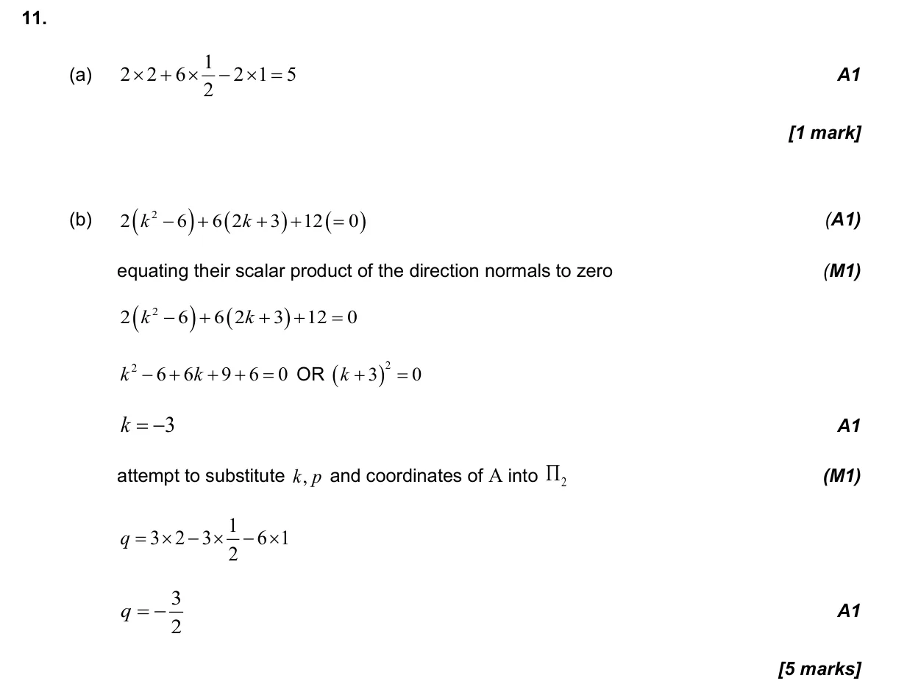
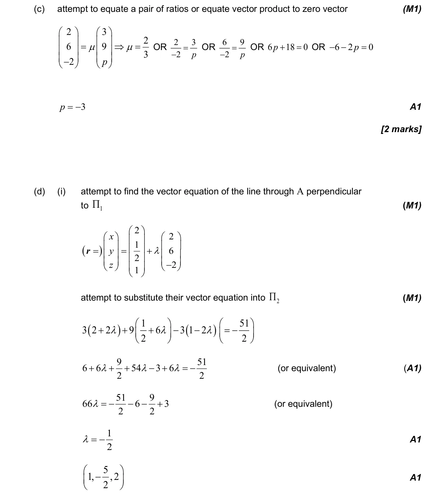
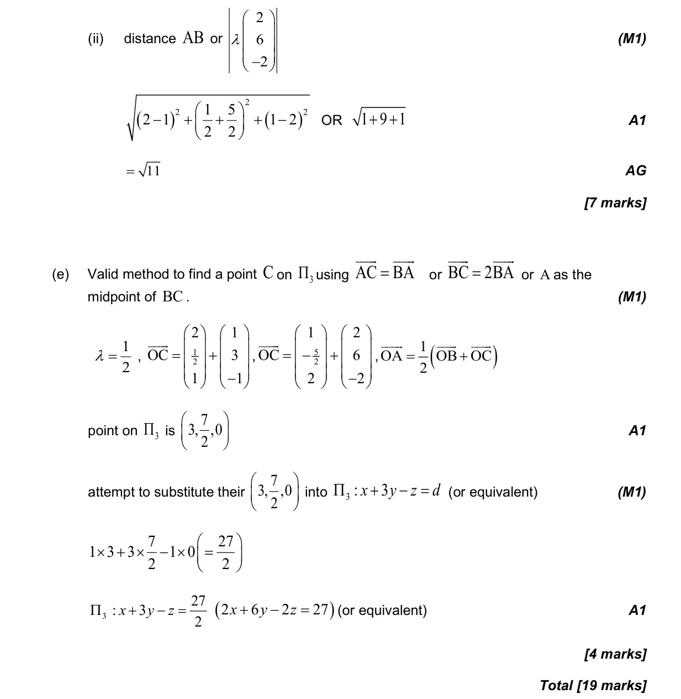

19 marks P1 TZ2 Section B No calculator 3.17 Vector and Cartesian equations of a plane3.12 Vectors: concepts, components and algebra3.18 Intersections and angles between lines and planes3.14 Vector equation of a line in two and three dimensions3.13 The scalar product and the angle between vectors Question Hide breakdown abcde Markscheme 